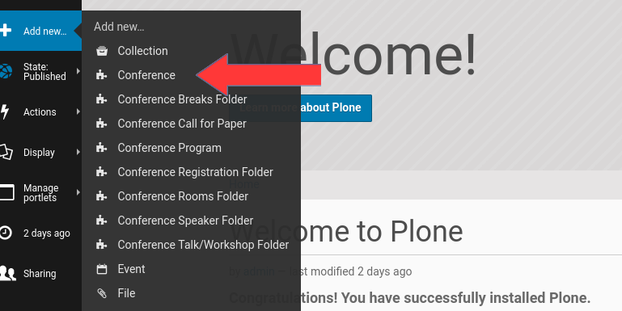
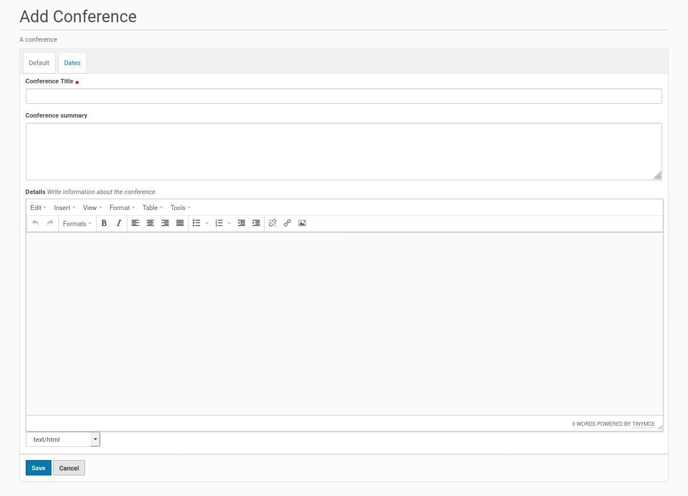
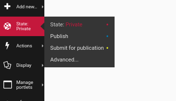
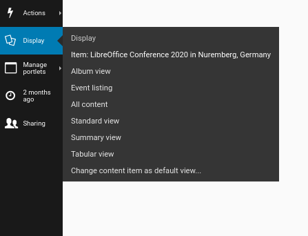

Conference Page¶
I assume you want to add new conference page to the Plone site root (‘Home’) and inform the site visitors about your conference, when it will take place etc. Therefore go to the Plone site root (‘Home’) and choose from the Plone menu on the left ‘Add new’. You get in this menu an entry to create a new ‘Conference’ (see the screenshot below).
{kind=link}
Click on this entry and you get the form below. This is the edit form to create and configure a new conference home page for your Plone site.
{kind=link}
The form contains a field for the title and optional fields for a summary and for detailed text etc. The latter one is a RichText field and offers a lot of design options. It is possible to include e.g. images or links. It is also possible to structure the text of the field, e.g. make it bold or justify it.
Once you finished the edits inside the form, save the form using the corresponding button. You could reedit or expand your content of the site later, if you wish. You could do this by selecting the edit entry on the menu bar on the left side for the conference page.
Publish The Conference Page¶
Once you finished the edits of the conference page and saved it, it got the default status ‘private’. If you have the permissions to publish content on the site you’ll find an entry to change this workflow status inside the menu bar on the left side. The corresponding entry shows the status ‘private’ yet. Click on this entry and you’ll get a submenu. If you want tot publish the page directly choose ‘publish’ from the submenu and your page get published (see screenshot below).
{kind=link}
Make The Conference Page The Home Page Of Your Plone Site¶
Although the conference page is published yet, it will not show as default entry for the ‘Home’ entry in the site menu. But it is not difficult to change this. Click on the navigation menu entry ‘Home’. Then click inside the menu on the left side the entry ‘Display’. There you could choose the entry with the name of your conference page and you’re done (see example in the screenshot below).
{kind=link}